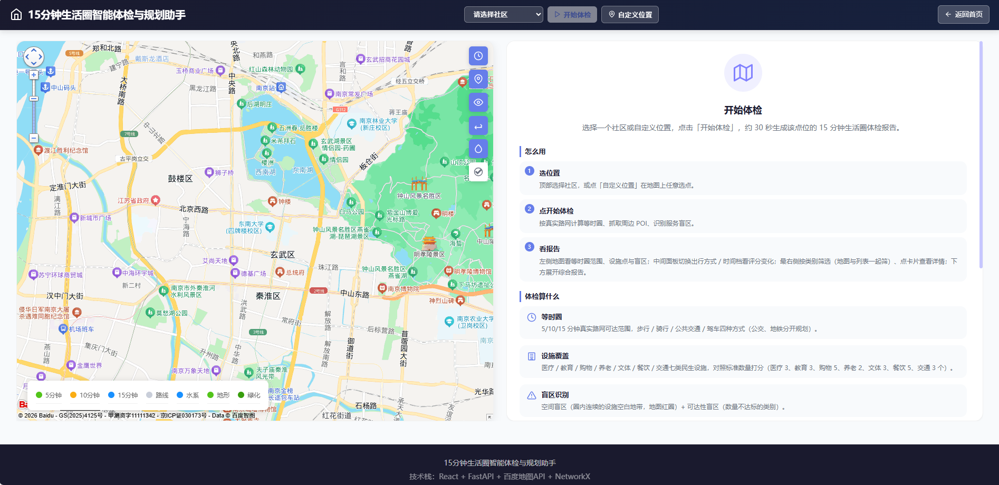
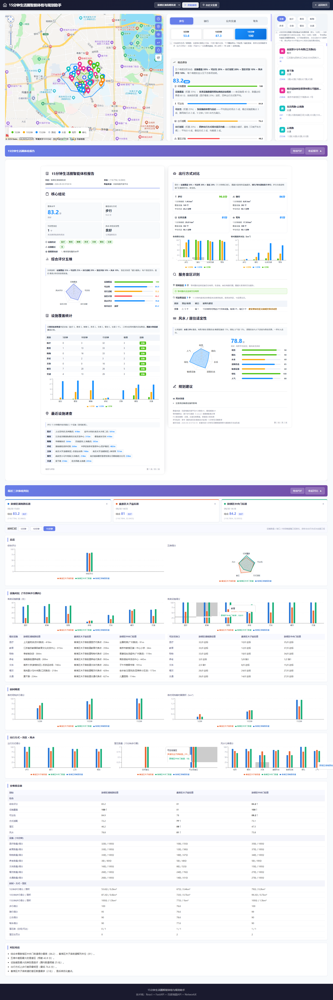

开源 AI 工具赛道 · 参赛作品介绍
基于地图开放能力的「15分钟生活圈」
智能体检与规划助手
真实路网等时圈 · 民生设施覆盖 · 服务盲区识别 · 多社区多维对比
技术栈：React 18 + TypeScript + FastAPI + 百度地图开放平台 + NetworkX ｜ 开源协议：MIT ｜ 部署：Docker Compose 一键起
作品摘要（200 字）
本项目面向「15分钟便民生活圈」建设中真实可达性难以量化的问题，基于百度地图路网计算步行/骑行/公交/驾车 5/10/15 分钟真实等时圈，统计圈内医疗、教育等七类民生设施覆盖，自动识别服务盲区，生成可视化体检报告，并支持多社区多维对比。核心功能含自定义选点体检、盲区标注、设施真实路线、报告导出与离线容错。使用百度地图：地理编码/逆地理、POI 检索、批量路线矩阵、路径规划（directionlite）、距离计算及地图 JS SDK。
一、项目背景
国家大力推行「15 分钟便民生活圈」建设，要求居民在步行 15 分钟范围内获得医疗、教育、购物、养老等基础服务。然而目前的社区建设规划多依赖人工普查与静态数据，缺乏对「真实可达性」的动态考量，主要痛点有三：
- 道路并非直线——红绿灯、过街天桥、施工围挡等都会极大影响实际步行可达范围，以直线半径估算与真实情况偏差显著；
- 传统评估成本高、更新慢——普查人力与时间投入大，数据落地即过时；
- 服务盲区难以精准发现——「哪些街区缺菜市场、药店、小学」缺少可量化、可复核的识别手段。
亟需一款综合运用地图开放能力（道路路网、POI 检索、路径规划与距离计算）进行量化分析与自动诊疗的工具。本作品即以此为目标：输入任意中心点坐标，基于真实路网生成等时圈、统计设施覆盖、标注盲区，一键输出可视化体检报告。
二、技术架构
前端展示层 —— React 18 + TypeScript + Vite
百度地图 JS SDK（地图与覆盖物渲染、点击选点、悬浮真实路线）· Recharts 图表 · IndexedDB 体检历史 · PDF 导出
▼ 同源 /api（nginx 反向代理）
后端服务层 —— FastAPI（Python）
SQLite 结果缓存 · QPS 限流与配额预检 · 真实/模拟分级降级
▼
算法层
等时圈引擎 · POI 分析与清洗 · 盲区识别 · 综合评分 · 风水评估 · 路网 Graph（NetworkX）
▼
百度地图开放能力
地理编码 / 逆地理 · POI 检索 · 路线规划 directionlite · 批量路线矩阵 routematrix · 地图 JS SDK
核心算法链
1
真实路网等时圈（扇形采样 + 二分搜索 + 样条插值）：以中心点为圆心取 36 个方向，每个方向用批量路线矩阵实测步行耗时，二分搜索逼近 5/10/15 分钟的真实路网边界点，再对边界点序列做三次样条插值平滑。全程不获取底层路网数据，仅凭分散点位的 API 测时结果推导近似连通区域。
2
多源 POI 数据清洗：每类设施多关键词检索 → 坐标去重 → 分类标准化 → 距离过滤 → 对照标准数量打分（医疗 3 / 教育 3 / 购物 5 / 养老 2 / 文体 3 / 餐饮 5 / 交通 3）。
3
服务盲区识别（双口径）：空间口径——网格覆盖计算找出圈内连续设施空白地带，地图红圈标注；可达性口径——按类别统计实达数量与标准的缺口（含公交可达性标注）。
4
综合评分：设施覆盖 35% + 可达性 25% + 出行适配 20% + 盲区 10% + 风水 10% 加权合成，取四种出行方式的平均水平；风水按地势、朝向、水系、道路形态、敏感设施、绿化、人气七项评估。
工程化与部署
- 缓存分级：真实数据结果缓存 30 天、模拟兜底数据缓存 1 小时；设施悬浮路线 30 天本地持久化（含中心坐标，防换点串线）；
- 容错降级：API 超时/限流自动退避与模拟数据兜底；四个预设社区内置真实体检快照，后端不可达时自动降级展示，演示不空白；
- 防滥用：自定义选点密码闸门，防止开源部署后任意坐标刷爆地图 API 配额；
- 一键部署与 CI：Docker Compose（FastAPI + nginx）一键起；GitHub Actions 执行后端 lint/测试、前端类型检查/构建、Docker 镜像构建与 Pages 自动发布。
三、应用场景
① 街道社区体检
对任意社区一键体检，量化设施短板与盲区，输出带结论的体检报告，支撑「生活圈补短板」日常工作。
② 规划选址评估
对比候选点位在 4 种出行方式、3 个时间档下的可达范围与覆盖得分，为便民设施布局提供量化依据。
③ 居民生活参考
选房、租房前查看目标社区的医疗/教育/养老等配套覆盖、盲区分布与真实步行可达范围。
④ 教学与演示
作为地图开放能力与空间分析的教学案例：等时圈算法、POI 清洗、盲区识别链路完整可复现。
四、创新点
- 真实路网等时圈替代直线半径估算——批量路线矩阵（单次 ≤64 终点）+ 二分搜索 + 样条插值，在不获取底层路网数据的前提下以低成本推导真实可达区域，直接回应「道路并非直线」的核心痛点；
- 多方式 × 多时间档矩阵化分析——步行/骑行/公共交通/驾车 × 5/10/15 分钟全组合的可达面积、覆盖与评分，公共交通进一步区分公交优先与地铁优先；
- 服务盲区双口径识别——空间空白带（直观标注）与可达性缺口（量化对照标准）互相印证，回答「哪缺、缺多少」；
- 多社区六维自动对比——本地记录最近三次体检，按综合、设施、时间、出行方式、盲区、风水六个维度图表化对比，自动生成结论，支撑社区间横向比较；
- 完整的容错与演示体系——快照降级、模拟兜底、分级缓存、限流退避叠加，断网、限流、后端不可达时演示依旧完整；
- 开源防滥用设计——自定义选点密码闸门 + 预设社区免限，兼顾开源可复现与 API 配额安全。
五、百度地图 API / SDK 使用清单
| 服务 | 端点 / 组件 | 在作品中的用途 |
|---|
| 地理编码服务 | geocoder/v2 | 坐标↔地址互查；自定义选点按所在道路命名社区 |
| 地点检索服务 | place/v2/search · detail | 七类民生设施 POI 检索与详情，覆盖统计的数据源 |
| 路线规划服务 | directionlite/v1（walking/riding/driving/transit） | 真实路线与耗时：等时圈方向测时、公交地铁规划、悬浮路线 |
| 批量路线矩阵 | routematrix/v2（单次 ≤64 终点） | 等时圈 36 方向批量测时——核心性能优化，每轮固定 1 次调用 |
| 地图 JS SDK | 地图 / 覆盖物 / 事件 | 地图展示、等时圈多边形、设施与盲区标注、点击选点 |
| JS 检索与工具 | LocalSearch · 四类路线 · Geocoder · getDistance | 客户端设施检索、悬浮真实路线（零后端配额）、逆地理解析、距离计算 |
六、界面展示

应用初始界面：左侧地图（点击选点、图层控制），右侧使用说明手册（怎么用 / 体检算什么 / 评分怎么算）

体检主界面（三栏联动）· 综合体检报告 · 最近三次体检多维对比（全流程）
- 开源地址：GitHub — github.com/mengjianan/15min-life-circle
- 在线演示：mengjianan.github.io/15min-life-circle/（介绍页）、mengjianan.github.io/15min-life-circle/app/（应用）
- 一键部署：git clone → cp .env.example .env（填入百度地图 AK）→ docker-compose up -d → 访问 http://localhost:3001
- 开源协议：MIT License